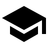
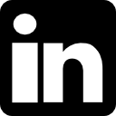
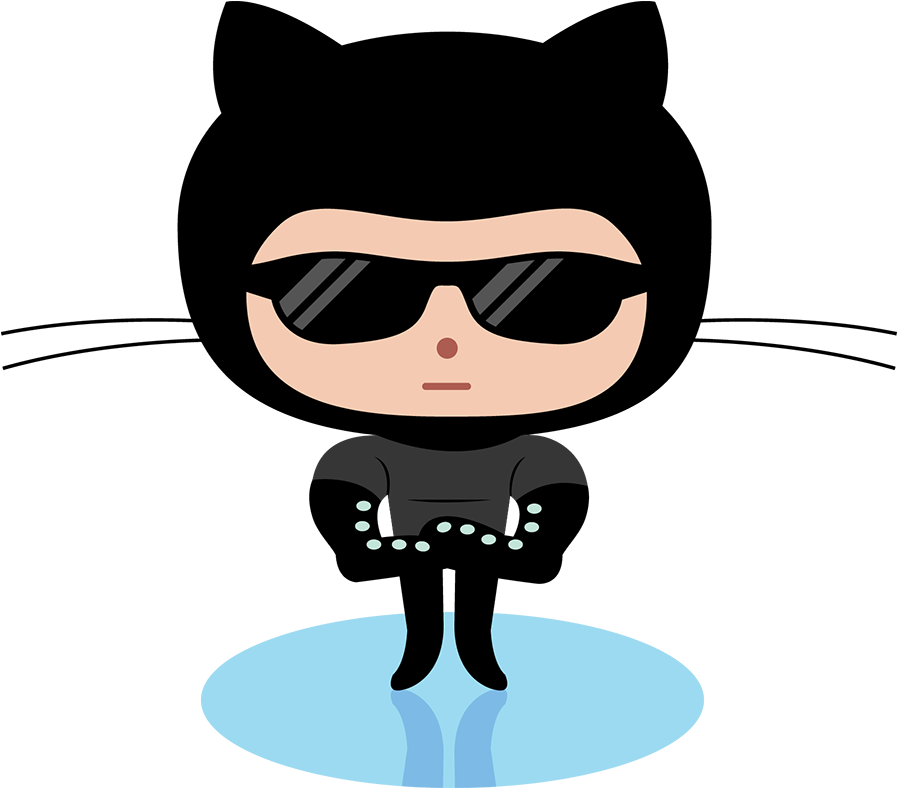

PhD Electrical Engineering
n dot bahadori at northeastern dot edu



I am a Postdoctoral Research Associate in the Department of Electrical and Computer Engineering at Northeastern University. My research has focused on tackling challenges facing next-generation cellular (5G) and Wi-Fi (802.11ax) networks such as millimeter-wave (mmWave) communication, multi-user multi-input-multi-output (MU-MIMO), and Wi-Fi sensing. I develop analytical approaches, and heuristic algorithms, in addition to data-driven and machine learning (ML)-based approaches to solving complex wireless optimization problems.
SplitBeam is a new data-driven model for MU-MIMO networks where we train a split DNN to directly output the beamforming matrix given the CSI matrix as input. The DNN is designed with an additional bottleneck layer to split the original DNN into a head model and a tail model, respectively executed by the STA and the AP. The head model generates a compressed representation of the BM, which is then used by the AP to produce the BM using the tail model.
ReWis is a novel multi-antenna multi-receiver framework for robust and environment-independent Wi-Fi sensing. ReWis leverages Few-shot learning which (i) reduces the need for extensive data collection and application-specific feature extraction; (ii) can rapidly generalize to new environments by using only a few new samples.
A context-aware scheme for enabling efficient initialization of content-centric D2D networks in the mmWave band through addressing decentralized D2D peer association and antenna beamwidth selection. The beamwidth selection problem is modeled as a potential game whose Nash equilibrium is obtained through Log-Linear learning.
A distributed algorithm that solves the problem of antenna beamwidth selection in a D2D mmWave network through multi-agent deep reinforcement learning. D2D links aim to maximize the network sum throughput and maintain reliable communication links while taking into account the application-specific QoS requirements and the cost associated with the beam alignment.
We plan to investigate the robustness of machine learning algorithms against adversarial machine learning attacks.
Open RAN is a collaboration of equipment makers and telecoms in various working groups to solve this interoperability problem by creating standards. As long as equipment meets open RAN standards it should be compatible with gear made by any other vendor whose gear also meets the standards.
We believe that reproducibility and replicability are key to to the development and evolution of science. Here, real-world experimental datasets and codes will be provided for the sake of reproducibility.
The experiment contains 802.11ac CSI measurements at 5GHz with 20 and 80 MHz bandwidth over 52 and 242 subcarriers. The measurements are carried in an office area A1, a meeting room A2, and a classroom A3 on different days and times. To test the generalizability of the ML model, it is trained with the data collected from A1 and tested on A2 and A3.